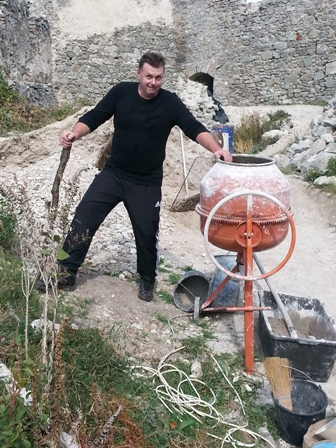
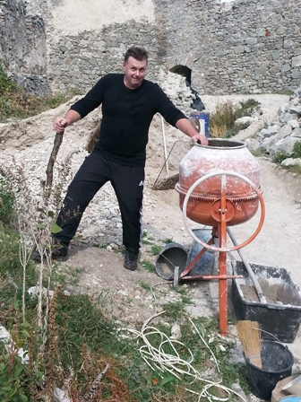

Tento rok sme sa opäť zišli na každoročnej akcii na novobanskom tajchu. Trošku v poskromnejšej zostave, ale skalní prišli takmer všetci a zabavili sme sa úžasne. Guláš sme navarili fantastický a do rána sme sa bavili pri živej hudbe.
Tu je pár základných aktivít, ktoré sme stvárali:
Medzi tohtoročných účastníkov patrili:
A čo sú tajchy? Odpoveď nájdeš tu:
 
